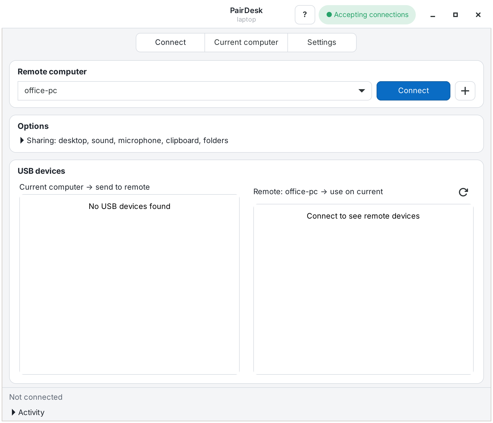
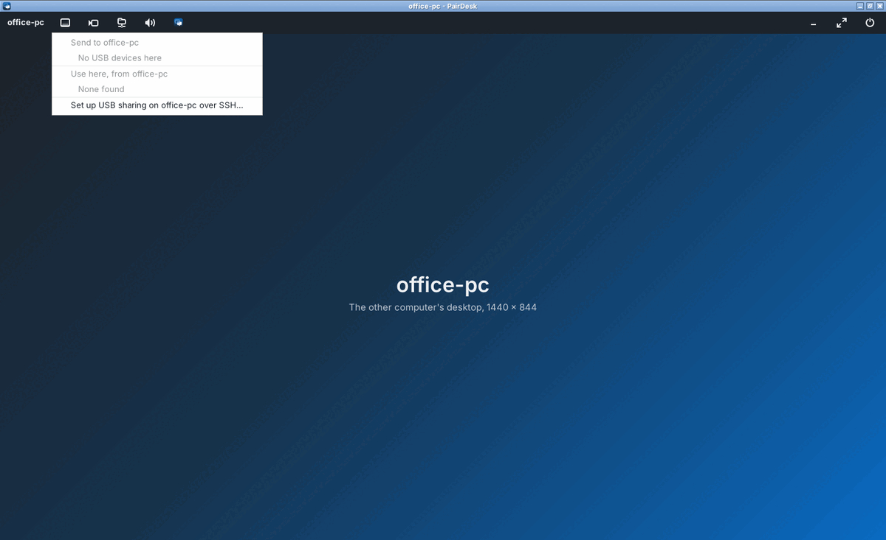

Sit at one desk. Use the other.
PairDesk opens another Linux computer on your network as if you were sitting at it: its whole desktop with sound and clipboard, plus the YubiKey, webcam and drives plugged into the computer in front of you.
laptop wants to pair with office-pc
The code shows on the other computer, hidden until you press Show. It works once, for ten minutes, only for the computer that asked, and no password ever crosses the network.


What it does
One package on every computer. One switch decides whether a computer can be reached.
- The whole desktop
- Sound, microphone, clipboard and printers, in a window with a toolbar for USB devices, camera, folders and full screen.
- Your camera, for any app
- Send a camera as smooth video. On the other computer it's a normal camera that Teams, Zoom and browsers can use.
- USB devices, both ways
- Use the security key, webcam or drive plugged in here on the other computer, or the other way round.
- Folders, both ways
- Each computer's shared folder shows up on the other one while you're connected.
- Finds your computers
- PairDesk lists the computers on your network that accept connections. Typing just an IP address is enough.
- Sets up the other computer for you
- If you can sign in to it with SSH, PairDesk installs itself there and turns remote access on, without anyone at that screen.
- Works without a monitor
- A small PC in a cupboard keeps accepting connections with nobody signed in, after a short guided setup.
- Survives Wi-Fi drops
- It reconnects by itself and puts your USB devices and folders back. A sleeping computer is woken up first.
- Keeps both sides up to date
- When one computer has a newer PairDesk, it offers it to the other. An administrator there approves it with their password.
- Leaves nothing behind
- Extras are installed only when first needed, after saying why. Uninstalling removes exactly those again.
How pairing works
Two computers trust each other after one short code. There's no account and no cloud.
- Turn on remote accessOn the computer you want to reach: Current computer, then Let paired computers connect.
- Press + where you sitPairDesk shows the computers it found. Pick one, or type its IP address.
- Sign in or type the codeIf it accepts SSH logins, sign in with its password and PairDesk pairs by itself. Otherwise type the code shown on its screen.
- ConnectFrom then on it's one button. Pairing is undone on both sides with Unpair.
Both computers prove they know the code without sending it, so a computer in between can't take part. Each pairing uses a new random key, like a one-time password. When PairDesk uses SSH for you, it asks that computer's password once per session in its own window and never saves it.
Install
Install it on both computers. Updates then arrive with your normal system updates.
sudo wget -qO /usr/share/keyrings/knowreva.gpg https://pairdesk.knowreva.com/apt/knowreva.gpg printf 'Types: deb\nURIs: https://pairdesk.knowreva.com/apt\nSuites: stable\nComponents: main\nSigned-By: /usr/share/keyrings/knowreva.gpg\n' | sudo tee /etc/apt/sources.list.d/knowreva.sources sudo apt update && sudo apt install pairdesk
After that, PairDesk is in your applications menu, and in App Center or GNOME Software.
Or download the latest package (always the newest
version) and install it: sudo apt install ./pairdesk_latest_all.deb
Works on
- Ubuntu 24.04, 26.04, 26.10 and 27.04
- Debian 13 (trixie) and 14 (forky)
- Any desktop, X11 or Wayland (GNOME on Wayland uses GNOME Remote Login)
Needs
Only Python, GTK and the SSH client, which every desktop already has. The rest is offered when you first use it.
What stays safe
- Everything travels inside one encrypted connection on PairDesk's own port.
- That port is closed whenever remote access is off.
- It runs as you, never as the administrator, and only paired computers get in.
- A paired computer can only run PairDesk's own requests, not a shell.
- Free and open source under the MIT licence.
- No account, no telemetry, nothing sent to KnowReva.
- Help covers setup, problems and uninstalling.